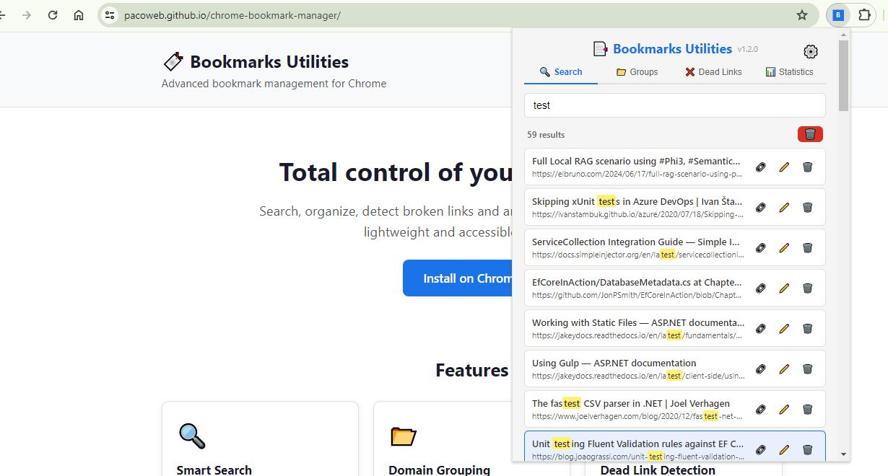
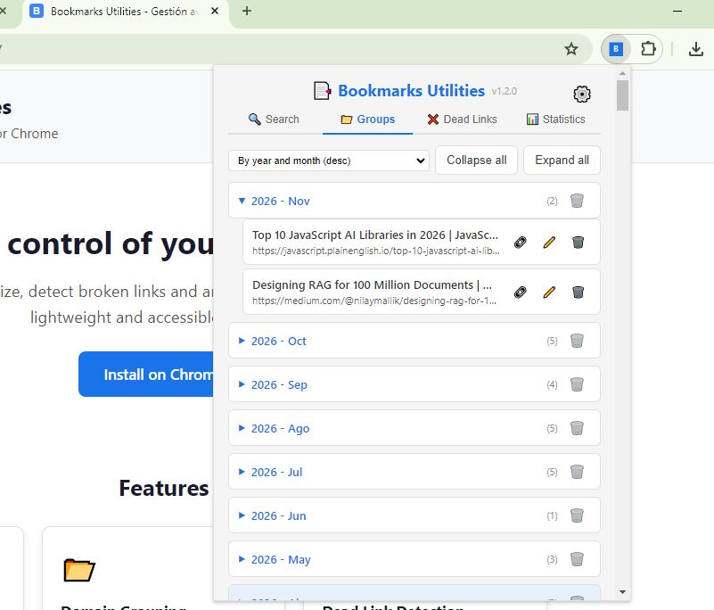
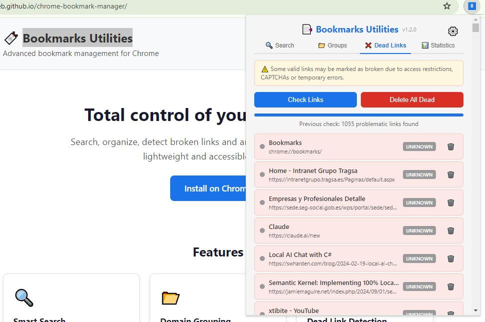
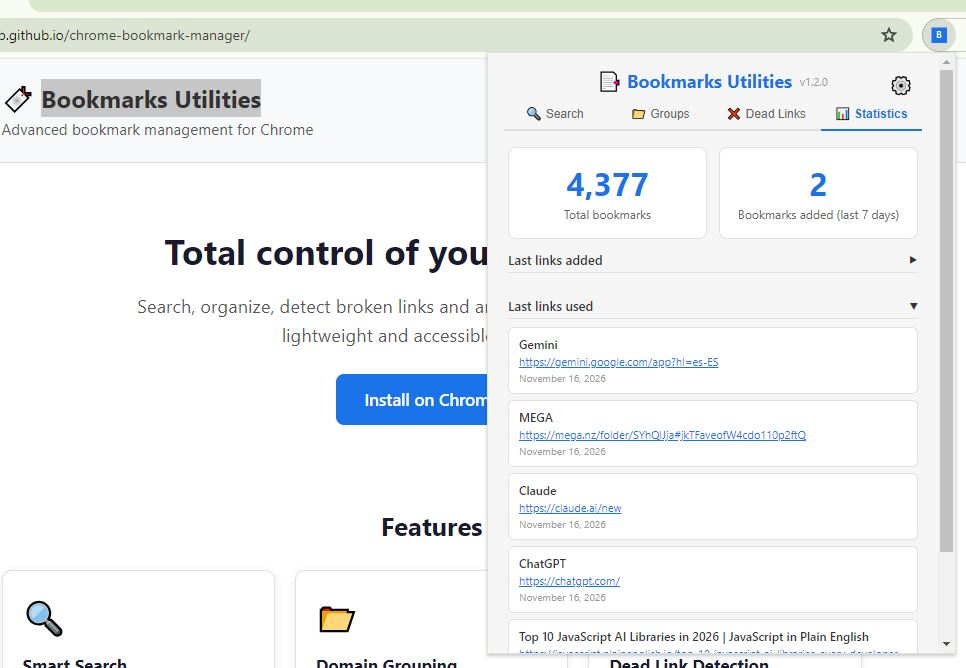

Gestión avanzada de marcadores para Chrome
Busca, organiza, detecta enlaces rotos y analiza tus marcadores con una extensión ligera y accesible.
Instalar en ChromeBusca por título o URL con un mínimo de 3 caracteres. Resultados instantáneos.
Organiza automáticamente tus marcadores por dominio para una navegación más rápida.
Verifica la salud de tus marcadores y elimina los enlaces que ya no funcionan.
Visualiza totales, dominios únicos, últimos añadidos y últimos usados.
Interfaz disponible en español e inglés. Cambia el idioma desde la configuración.
Navegación por teclado completa, roles ARIA y soporte para lectores de pantalla.
Antes de eliminar enlaces rotos, se guarda un backup. Recupéralo desde la configuración.
Elige el idioma y el modo de apertura: popup o panel lateral.



